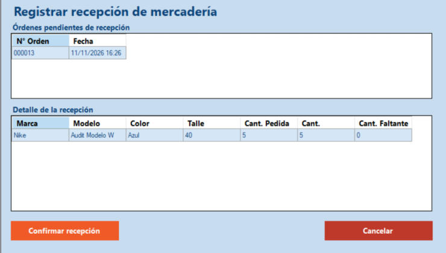

Inicio › Compra › Registrar recepción de mercadería
Registrar recepción de mercadería
Cuando llega la mercadería elegís la orden y confirmás cuántos pares llegaron de cada producto. Si falta alguno, el sistema calcula el faltante y lo deja anotado.
Dónde está: Compra › Registrar recepción de mercaderíaLo usa: Administrador, Encargado de depósitoAtajo: F1
Pasá el mouse por encima de cualquier botón o campo de la pantalla para ver qué hace.

Qué hace cada elemento
- 1Órdenes pendientes de recepciónLas órdenes de compra que todavía no se recibieron. Al abrir la pantalla queda elegida la primera.
- 2Detalle de la recepciónLos productos de la orden con la cantidad pedida, la recibida y el faltante.
- 3Cantidad recibidaEmpieza igual a lo pedido. Si llegó menos, hacé doble clic en la celda y escribí lo que llegó realmente. El faltante se calcula solo.
- 4Confirmar recepciónRegistra lo recibido. La pantalla se cierra y la orden pasa a estado Recibida.
- 5CancelarCierra la pantalla sin registrar nada.
Cómo hacerlo
- Elegí la orden en Órdenes pendientes de recepción.
- Controlá que las cantidades coincidan con lo que llegó.
- Tocá Confirmar recepción. Aparece "Recepción registrada correctamente".
- Elegí la orden.
- Hacé doble clic en la Cantidad recibida del producto que llegó incompleto y escribí lo que llegó.
- Comprobá que el faltante se actualizó y tocá Confirmar recepción.
Tené en cuenta: Al confirmar, la orden pasa a Recibida aunque falten unidades. Lo faltante queda registrado en la bitácora de eventos.
Para saber más
Mensajes que puede mostrar el sistema 6
| Mensaje | Qué significa y qué hacer |
|---|---|
| AvisoNo hay órdenes pendientes de recepción. | Primero hay que registrar una orden de compra. La pantalla se cierra sola. |
| AvisoSeleccione una orden de compra. | Tocá una fila de la lista de arriba. |
| ErrorLa cantidad recibida debe estar entre 0 y la cantidad pedida. | Corregí la cantidad; vuelve a quedar la pedida. |
| ErrorDebe recibir al menos una unidad para registrar la recepción. | Todos los productos tienen cantidad cero. |
| ErrorEl valor ingresado no es un número válido. | En la cantidad solo van números. |
| ListoRecepción registrada correctamente. | Quedó anotado lo que llegó y la orden pasó a Recibida. |
Reglas a tener en cuenta 4
- Pueden registrarla el Administrador y el Encargado de depósito.
- Registrar la recepción no suma stock: las unidades entran al stock cuando se confirma el pago de la factura, según lo que se recibió.
- Una orden se recibe una sola vez.
- Cada botón depende de los permisos del perfil.
SneakRush · Ayuda del sistema · Registrar recepción de mercadería. Podés abrir esta ayuda desde cualquier pantalla con la tecla F1.